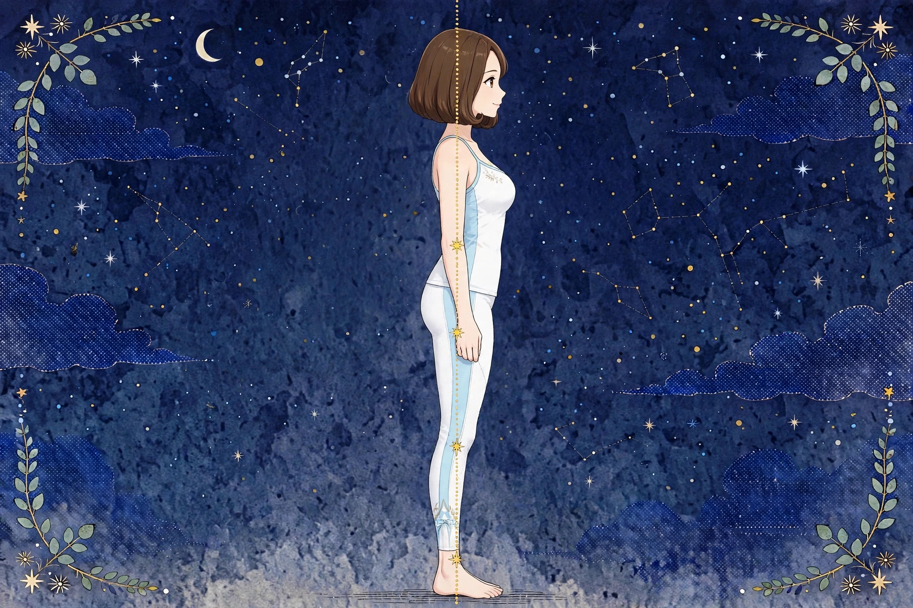

梅田で寒さのピークに気になる肩こり｜真冬の冷え込みの日の過ごし方とセルフケア、受診の目安ハウツー

2月の梅田は、一年のなかでも寒さが厳しい時期です。朝晩の冷え込みが強く、駅から店までの移動では冷たい風にさらされ、デパートや地下街に入ると暖房の効いた空気に切り替わります。そんな日が続くと、肩や首のまわりが重く感じることはありませんか。肩こりとは、肩や首のまわりが重く感じる、張った感じがする、動かしにくい感じがする、といった感じ方を指す言葉として使われることが多いです。寒さのピークは、冷え込みと寒暖差、厚着や荷物の重さが重なり、肩こりを感じやすい時期になると言われています。このコラムでは、寒さのピークに肩こりが気になるときの要因の整理、真冬の日の過ごし方とセルフケア、受診を考える目安についてお伝えします。
#梅田 寒さのピーク 肩こり#真冬 冷え込み#肩こり セルフケア#梅田 女性専用 サロン 肩こり
肩こりとは、どんな状態か
肩こりは、肩や首のまわりが重く感じる、張った感じがする、首を回すと引っかかる感じがする、といった感じ方を指す言葉として使われることが多いです。肩こりの一般的なとらえ方は、コラム「梅田で雨の日に気になる肩こり｜低気圧の日の過ごし方とセルフケア、受診の目安」でも紹介しています。
肩こりの現れ方は、ひとつの原因だけで説明できるものではありません。寒さ、寒暖差、姿勢、荷物の重さ、睡眠の質などが関わっていると言われています。寒さのピークは、こうした要素が重なりやすい時期です。肩の重さを感じたら、その日の過ごし方を振り返ってみることが、セルフケアの出発点になります。
寒さのピークに重なりやすい要因
要因のひとつは、冷え込みで体が縮こまることです。2月の梅田は、朝晩の冷え込みが強く、屋外に出ると肩をすぼめて背中を丸める姿勢になりやすくなります。寒い場所では、肩に力が入ったまま歩く時間が長くなり、肩こりを感じやすくなると言われています。外出のときは、首元を温める服装で体を冷やさない工夫が役立ちます。
次に、暖房の効いた室内と寒い屋外の行き来があります。デパートや地下街のなかは暖かく、屋外に出ると冷たい風が吹きます。暖かい場所と寒い場所を行き来すると、体の緊張がゆるんだり締まったりを繰り返し、肩の重さを感じやすくなると言われています。室内では、暖房の風が直接当たらない席を選ぶ、温かい飲み物を飲む、といった工夫も役立ちます。
厚着と荷物の重さも見逃せません。真冬は、コートやマフラー、手袋と身につけるものが増え、肩への負担が大きくなります。買い物の荷物が増えてきたら、途中でコインロッカーに預けて身軽になると、肩への負担が軽くなります。バッグは、片方の肩だけで持つのではなく、両手で持ったり、リュックに替えたりする工夫も役立ちます。
年末年始の疲れの持ち越しと、運動不足も関わります。年末年始は、帰省や親戚の集まりで座りっぱなしの日が続き、年明けの仕事始めでデスクワークが本格化します。体を動かす時間が少ない日が続くと、肩の重だるさを感じやすくなると言われています。寒さのピークの時期は、室内でできる小さな動きを入れてみてください。
真冬の日の過ごし方とセルフケア
まず、体を温める工夫から始めてみてください。帰宅したら、ぬるめのお湯にゆっくりつかって肩まで温めましょう。湯船のなかで両腕をゆっくり回す、肩甲骨を寄せるように胸を開く、といった小さな動きを挟むと、さらに体が温まります。蒸しタオルを首元に当てる工夫も、肩の重さを感じる日のセルフケアのひとつです。蒸しタオルは熱すぎない温度で、気持ちよい範囲にとどめましょう。
服装の見直しも、寒さのピークの日のポイントです。首元を温めるマフラーやタートルネック、肩を冷やさないコートを選ぶと、屋外での肩の緊張を感じにくくなります。荷物が増える日は、バッグを両手で持つ、リュックに替える、途中でコインロッカーに預ける、といった工夫が役立ちます。梅田の地下街を歩くときは、荷物を預けて身軽になってから買い物を回る進め方もおすすめです。
こまめに体を動かす時間も大切です。デスクワークの日は、30分ごとに立ち上がる時間を入れましょう。立ち上がって両腕をゆっくり回す、肩甲骨を寄せるように胸を開く、といった小さな動きを挟むと、肩の重だるさを感じにくくなります。寒い日は、室内でできる動きから始めてみてください。
帰宅後の過ごし方も大切です。帰宅したら、まず温かい飲み物を飲みながら体を休めましょう。肩をすぼめた姿勢が続いた日は、入浴で体を温め、肩を丸めた姿勢をほぐす時間を入れてみてください。寝る前は、寝室を少し温め、布団の冷たさが気になるときは、湯たんぽや温かい毛布を使う工夫が役立ちます。
受診を考える目安
セルフケアを続けても、肩こりと一緒に気になる変化がある場合は、早めに医療機関を受診してください。肩や腕のしびれがある、痛みが強い、頭痛やめまいが続く、といった状態がある場合は、自己判断で様子を見るのではなく、整形外科などの医療機関に相談することが大切です。
肩こりが長く続き、セルフケアを続けても変わらない場合も、医療機関に相談してみてください。受診のときに伝えることも、まとめておくと役立ちます。肩こりを感じる時間帯（朝起きたとき・デスクワークのあと・夕方）、肩こりの感じ方、続いている期間、睡眠の様子、寒い日の過ごし方をメモしておくと、医師に伝えやすくなります。気になる変化を書き留めておくと、受診のときに役立ちます。
当店でのケアとサロンのご案内
ステラポラリスは、大阪・梅田エリアのレンタルサロンで施術する女性専用・完全予約制のサロンです。2026年11月4日に開院しました。営業は月〜土17:00〜22:00（日曜休み）、施術はオイルマッサージと美容整体、料金は90分10,000円です。ご予約はLINEで受付中です。
場所は大阪市北区堂山町12-5 ロイヤルハイツ梅田Ⅱ 303号室（レンタルサロンACE内）、中崎町駅から徒歩5分・阪急梅田駅から徒歩8分です。担当は施術歴30年・鍼灸師資格を持つセラピスト1名で、当店では鍼灸施術は行いません。